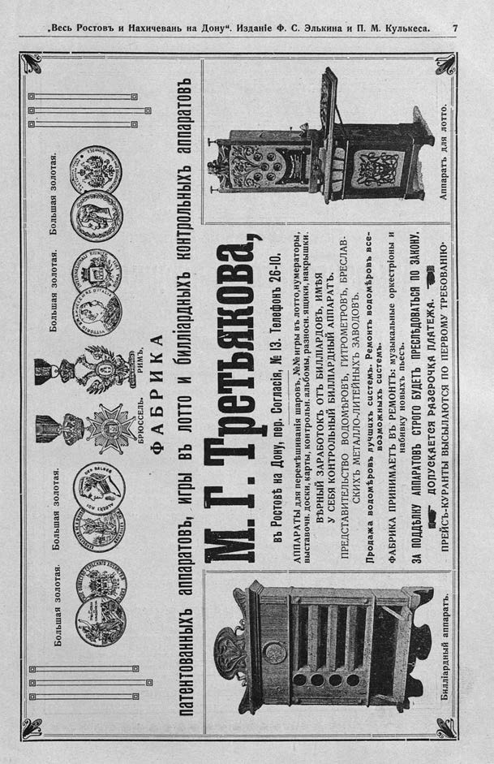

Лист источника 589
Скан

Распознанный текст
„Весь Ростовъ и Нахичевань на Дону“. Изданіе Ф. С. Элькина и П. М. Кулькеса. 7
Большая золотая. Большая золотая. Большая золотая. Большая золотая.
СКОЕ ОБЩЕСТВО СЕЛЬСКАГО ХОЗЯЙСТВА
ТРУДОЛЮБІЕ И БЕРЕЖЛИВОСТЬ
РОСТОВЪ н/Д
EXPOSITION DE LIEGE
ALBERT ROI DES BELGES
BRUXELLES 1910
VITTORIO EMANUELE III RE D'ITALIA
INTERNAZIONALE RIUNITE
ROMA 1911
ВЪ ПРОШЛОМЪ ТРУДЪ
ВЪ БУДУЩЕМЪ СИЛА
ЕКАТЕРИНОСЛАВ
ЕКАТЕРИНОСЛАВ. 1910 - ПРИВИЛ. - І. Г. ТРЕТЬЯКОВЪ
БРЮССЕЛЬ. РИМЪ.
ФАБРИКА
патентованныхъ аппаратовъ, игры въ лотто и билліардныхъ контрольныхъ аппаратовъ
М. Г. Третьякова,
въ Ростовѣ на Дону, пер. Согласія, № 13. Телефонъ 26-10.
АППАРАТЫ для перемѣшиванія шаровъ, №№ игры въ лотто, нумераторы,
выставочн. доски, карты, контрольн. альбомы, разнозн. ящики, накрышки.
ВѢРНЫЙ ЗАРАБОТОКЪ ОТЪ БИЛЛІАРДОВЪ, ИМѢЯ
У СЕБЯ КОНТРОЛЬНЫЙ БИЛЛІАРДНЫЙ АППАРАТЪ.
ПРЕДСТАВИТЕЛЬСТВО ВОДОМѢРОВЪ, ГИТРОМЕТРОВЪ, БРЕСЛАВ-
СКИХЪ МЕТАЛЛО-ЛИТЕЙНЫХЪ ЗАВОДОВЪ.
Продажа водомѣровъ лучшихъ системъ. Ремонтъ водомѣровъ все-
возможныхъ системъ.
ФАБРИКА ПРИНИМАЕТЪ ВЪ РЕМОНТЪ: музыкальные оркестріоны и
набивку новыхъ пьесъ.
ЗА ПОДДѢЛКУ АППАРАТОВЪ СТРОГО БУДЕТЪ ПРЕСЛѢДОВАТЬСЯ ПО ЗАКОНУ.
ДОПУСКАЕТСЯ РАЗСРОЧКА ПЛАТЕЖА.
ПРЕЙСЪ-КУРАНТЫ ВЫСЫЛАЮТСЯ ПО ПЕРВОМУ ТРЕБОВАНІЮ.
Билліардный аппаратъ.
Аппаратъ для лотто.